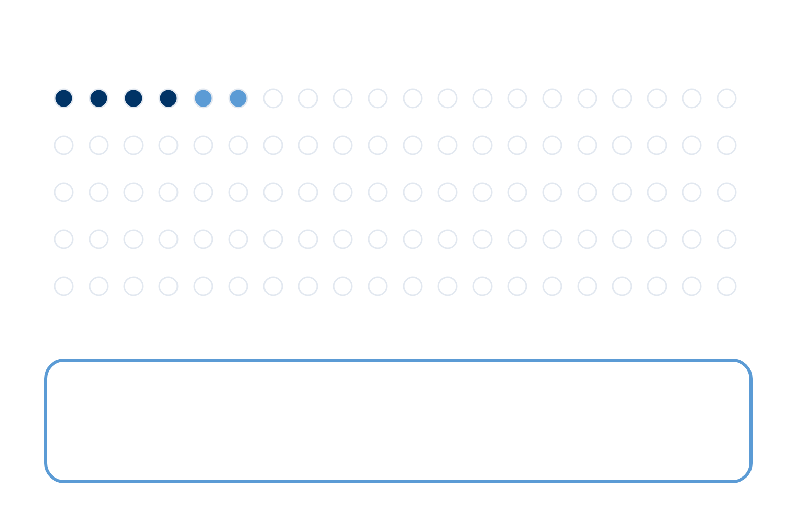
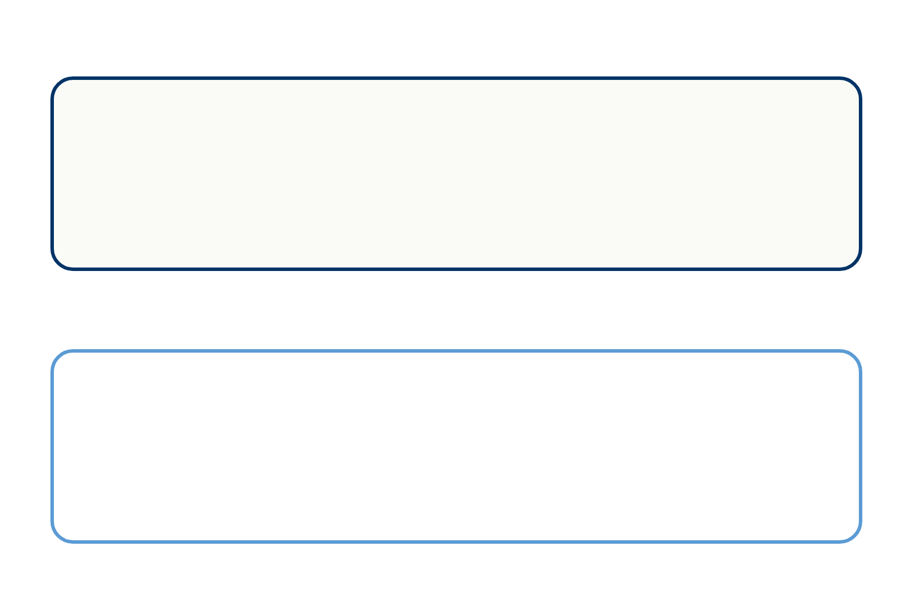
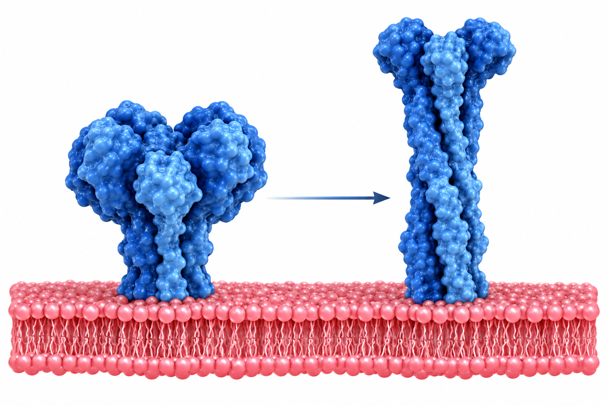
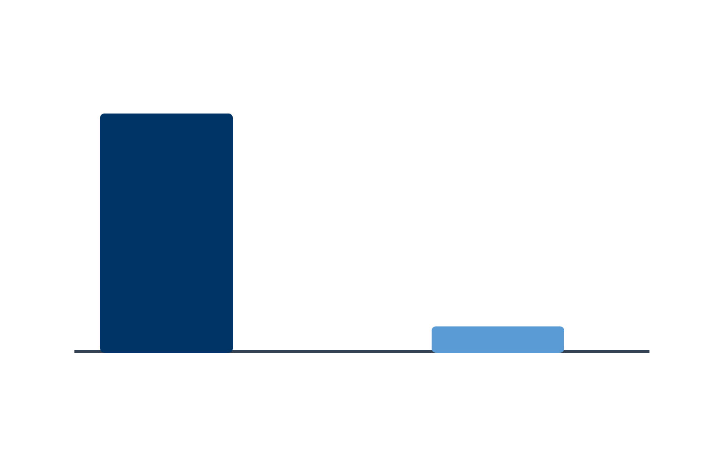
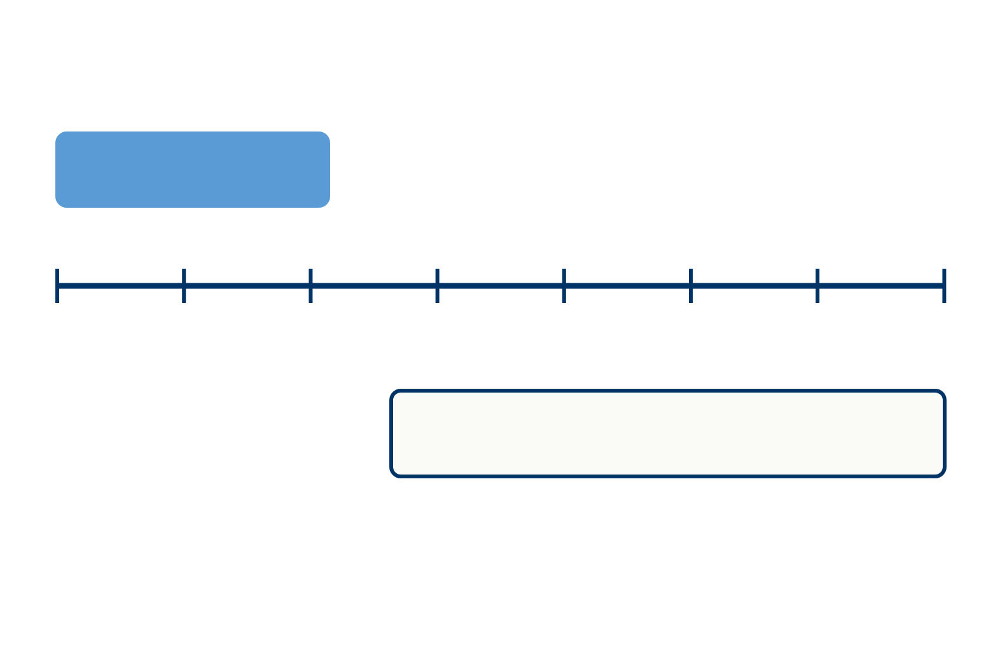

PATIENT EDUCATION · INFECTIOUS
RSV 백신 상담
독감 백신과 다른가요?
접종 대상·시기·반복 접종·효과와 위험을 구분해서 이해합니다
강의에 소개된 국내 노인 감염 추정치입니다

노인 연간 감염 약 4~6%감염자의 약 5~10% 입원입원환자 사망률 약 7~10%각 숫자의 분모가 다릅니다연구 대상과 평가 시점을 함께 봅니다
2026년 강의에서 소개한 대한감염학회 권고입니다

75세 이상전체 성인 · 1회50~74세중증 RSV 고위험군 · 1회단순 고혈압은 만성 심혈관질환 항목에서 제외됩니다
 신경·신경근육질환
신경·신경근육질환강의에 제시된 국가·제품·시점을 나눠 봅니다
| 구분 | 설명 |
|---|---|
| 국내 Arexvy 허가 · 강의 시점 | 60세 이상 전체, 50~59세 중증 감염 고위험군 |
| 대한감염학회 권고 · 강의 시점 | 75세 이상 전체, 50~74세 중증 RSV 고위험군에 1회 |
| 미국 FDA 허가 · 강의 표 | 세 제품 모두 60세 이상 전체와 18~59세 고위험군 |
| Abrysvo · 국내 시점 | 강의에서는 2026년 하반기 허가 예정으로 소개. 미국 허가와 국내 허가를 구별 |
미국 Abrysvo 기준과 국내 예정 설명을 구분합니다
바이러스가 호흡기 세포에 들어가는 과정을 막는 표적입니다

융합 전：백신 표적융합 후항원의 양을 단순히 효과의 크기로 비교하지 않습니다
백신 숫자를 볼 때 무엇을 얼마나 줄였는지 확인합니다

미접종 10%접종 1%미접종군접종군강의 예시：상대위험 1/10 → 효능 90%Arexvy AReSVi-006 시험: 60세 이상 24,966명
대상·증상 수·평가항목과 추적 기간이 다릅니다
| 구분 | 설명 |
|---|---|
| Arexvy · AReSVi-006 | 하기도 질환 82.6%, 중증 하기도 질환 94.1%, 급성 호흡기 감염 71.7% |
| Abrysvo · RENOIR | 하기도 질환 85.7%와 증상 ≥2개 기준 66.7%, 급성 호흡기 감염 62.1% |
| mRESVIA · ConquerRSV | 하기도 질환 83.7%와 증상 ≥2개 기준 68.4%, 급성 호흡기 감염 68.4% |
| 해석 | 같은 사람들을 대상으로 제품끼리 직접 비교한 결과가 아닙니다. 다른 조건의 수치로 우열을 정하지 않습니다. |
강의의 2026 권고는 RSV 백신 1회입니다
강의에 소개된 온대지역·국내 감시 자료의 계절성입니다

8월9월10월11월12월1월2월3월가능하면 8~10월 접종대략 10월 말~3월 말 유행대상자는 연중 어느 때든 1회 접종 가능Arexvy 3시즌 연구에서 단회·재접종을 각각 위약과 비교했습니다
제품별 추적 기간과 평가 정의를 함께 봅니다
| 구분 | 설명 |
|---|---|
| Arexvy · 3시즌 | 1시즌 82.6%, 2시즌 56.1%, 3시즌 48.0%; 누적 2시즌 67.2%, 3시즌 62.9% |
| Abrysvo · 2시즌 | 1시즌 85.7%(66.7%), 2시즌 77.8%(55.7%); 누적 81.5%(60%). 괄호는 증상 기준 차이 |
| mRESVIA · 18~24개월 | 3.7개월 83.7%, 8.6개월 62.5%, 12개월 56%; 12~24개월 30%, 24개월 누적 47.4% |
| 상담에 쓰는 의미 | 감소 추세가 있다고 바로 정기 재접종이 필요하다는 뜻은 아닙니다. 강의는 추가접종 권고를 연구 자료와 구분합니다. |
임상시험 효능과 다른 설계의 효과 추정입니다
길랭-바레증후군(GBS)의 추가 발생 추정치입니다
연자 Q&A의 재접종·비용 상담입니다
RSV 상담과 독감 상담을 각각 정리합니다
접종 대상·시기·반복 접종·효과와 위험을 구분해서 이해합니다